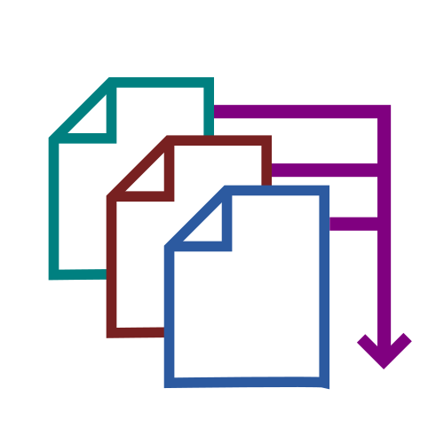

Multiparser#
A parallel multiple file parse trigger system
Multiparser is a framework developed by the United Kingdom Atomic Energy Authority focused on tracking changes to files, triggering user-defined callbacks on file creation and modification. This allows the user to monitor the output from multiple processes and define how metrics of interest are handled. The project is available under an MIT license allowing reuse within both open source and proprietary software.
Multiparser Example
import logging
logging.basicConfig()
from typing import Any
from multiparser import FileMonitor
logger = logging.getLogger(__file__)
def callback(data: dict[str, Any], metadata: dict[str, Any]) -> None:
logger.info("Parsed data: %s", data)
with FileMonitor(
per_thread_callback=callback,
timeout=10,
) as monitor:
monitor.tail(path_glob_exprs="*.log", [r"^completion: (\d+)%"], ["completion"])
monitor.run()